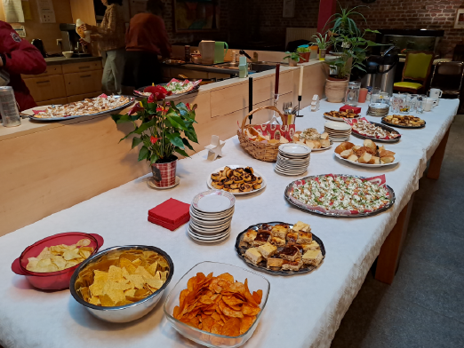
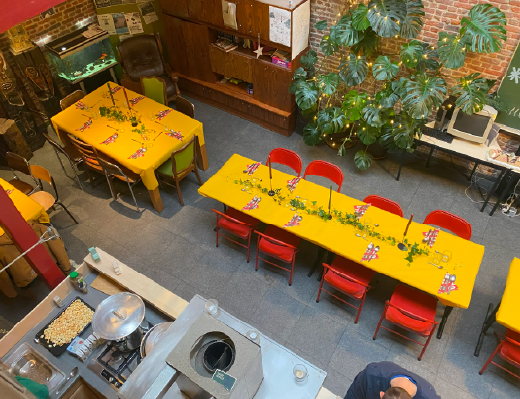

Huis van Vrede
ondersteunt vrijwillige
woonbegeleiding voor
thuislozen in Brussel.

Doelgroep
Huis van Vrede ondersteunt kwetsbare individuen zonder vaste woonst, werk of relationele verbanden, inclusief daklozen en mensen in instabiele woonsituaties, met begeleiding voor woontrajecten en herintegratie.
LEES MEER



Historiek
Huis van Vrede, opgericht in 1991 als onthaaltehuis voor thuislozen, evolueerde naar een erkend centrum voor thuisbegeleiding en opereert sinds 2023 volledig autonoom.
LEES MEER